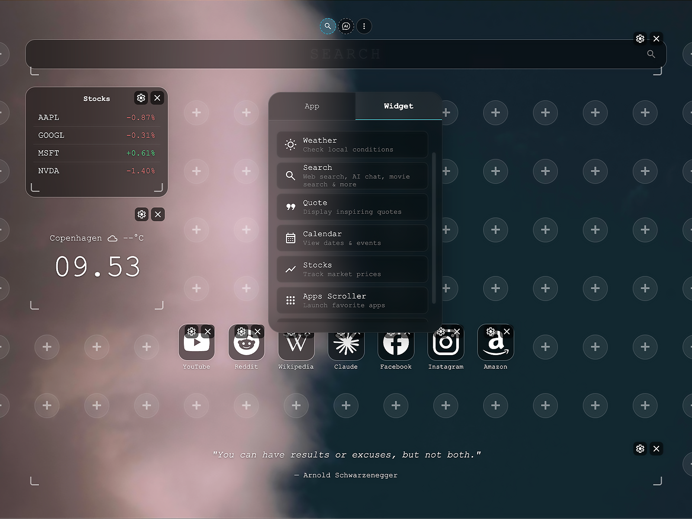
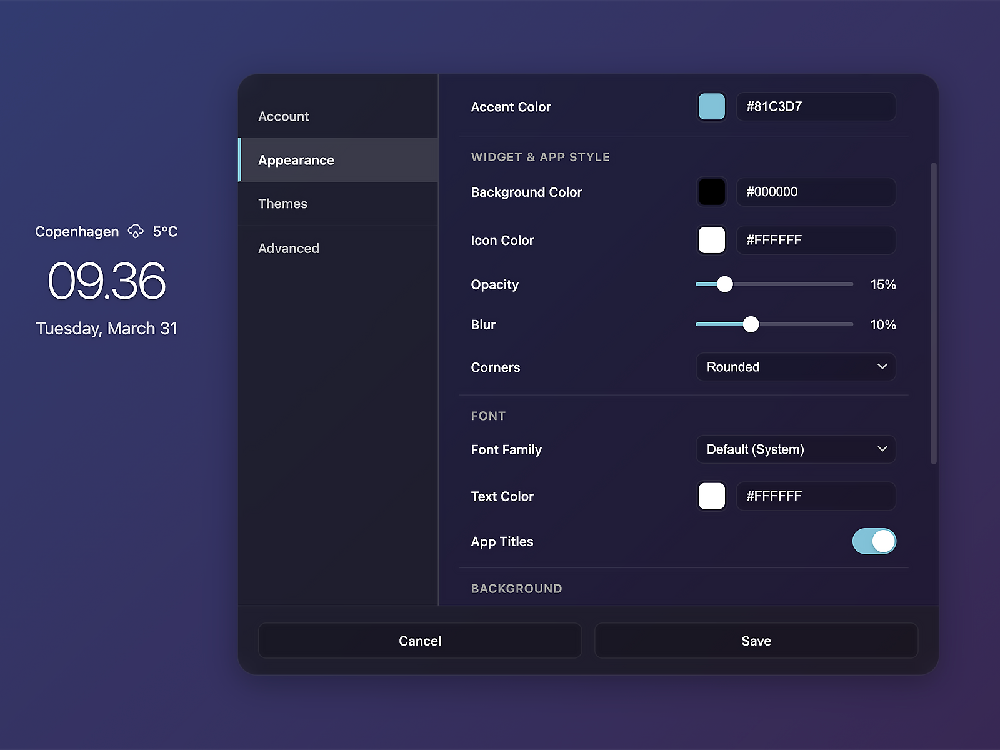

En tilpasselig ny-fane til Chrome og Firefox
TrueTab er en browser-udvidelse der erstatter den nye fane med et tilpasseligt dashboard. Bygget til Manifest V3 til Chrome og Firefox — med widgets for vejr, aktier, kalender og meget mere.
Projektet har en tilhørende hjemmeside med brugerkonto, temavalg og support. Udviklet over ca. seks måneder med fokus på ydeevne og brugeroplevelse.
Designet er bevidst inspireret af Apples stil — et strategisk valg, der udnytter at iPad- og iPhone-generationen nu er ved at blive voksne og for første gang skal bruge en PC til studie og arbejde.
Type
Browser-udvidelse + hjemmeside
Teknologi
Manifest V3, PHP, JavaScript, HTML/CSS
Varighed
~6 måneder
Mit bidrag
Design, frontend, backend, extension
Link
Ikke tilgængeligt

